Why We Procrastinate
Rewriting the Bellman equation so reinforcement-learning agents put things off the way people do, then fitting them to human data.
Things I have built and studied
Research, robots, and the tools in between. Each little island stands for one project; follow it to the code on GitHub.
How people and language models form goals, make decisions, and come to seem like someone.
Rewriting the Bellman equation so reinforcement-learning agents put things off the way people do, then fitting them to human data.
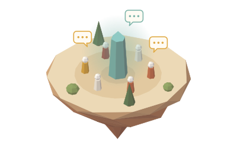
A paper with a UC Berkeley colleague on why we treat language models as socially adjacent beings, building on Chalmers and Dennett.
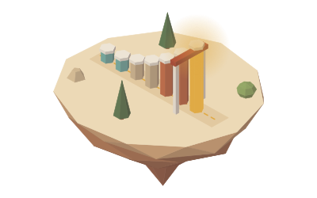
Machines that see, decide, and move in the physical world.
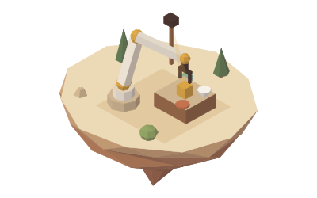
A vision-language-action model that infers a latent world state and plans over it, instead of mapping pixels straight to actions.
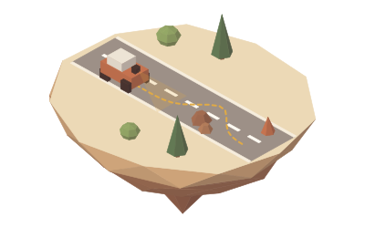
Real-time lane following and obstacle avoidance on a PiCar, with a vision-language model prototyped as its decision manager.
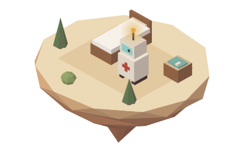
A nursing-assistant robot that drives on an Arduino, listens on a Raspberry Pi, and uses ChatGPT to analyse symptoms.
Turning cameras, LiDAR, 3D scans, and sound into models a machine can use.
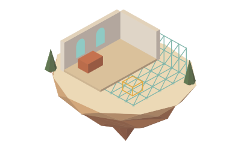
A pipeline that turns a scanned 3D room into a simulation-ready MuJoCo scene, so real spaces become robot-learning environments.
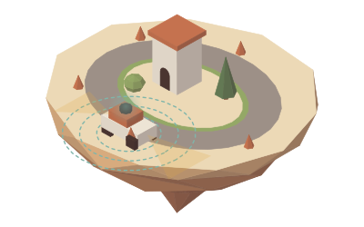
Brought up the first full sensing suite on UC San Diego's student race car: front and rear cameras and a 360° LiDAR in one calibrated view.
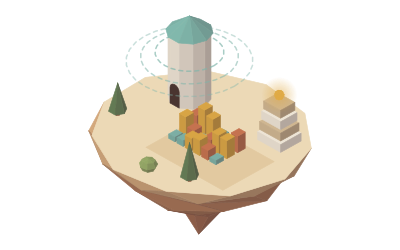
Leading a student lab that turns raw sound into tokens a multimodal transformer can read, and tests one model against task-specific classifiers.
Practical software built end to end: optimizers, data pipelines, and full-stack apps.
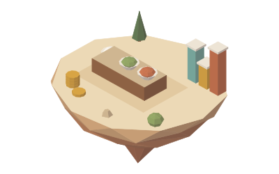
An integer-programming engine that finds the cheapest UC San Diego campus meals hitting daily macro targets on a dining-dollar budget.
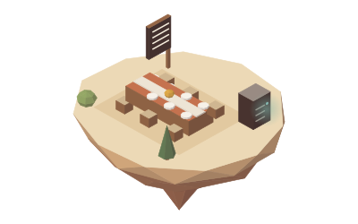
A full-stack menu planner, from data model to production, with a React front end, Spring Boot API, and self-hosted MariaDB.
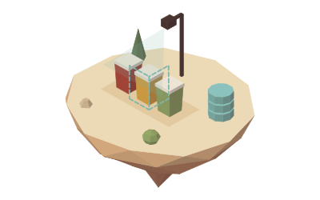
A FastAPI and PostgreSQL pipeline that gathers waste-sorting data through the Eyepop.ai vision API, then cleans and analyses it.